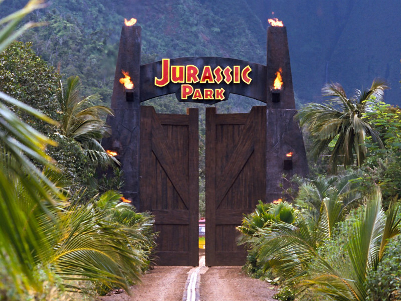
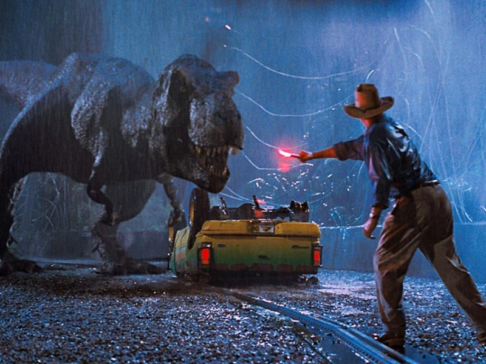

Bienvenido a Jurassic Park
¡Bienvenidos a Jurassic Park! Desde el momento en que pasas las icónicas puertas de entrada, te embarcas en un viaje sin precedentes a un mundo perdido, donde la majestuosidad de la naturaleza y las maravillas de la ciencia convergen para brindarte una experiencia inigualable. Aquí, en Jurassic Park, los límites de la biotecnología se han desplazado para traerte cara a cara con las criaturas más grandiosas que jamás hayan pisado la Tierra: ¡los dinosaurios! A medida que camines por nuestros senderos cuidadosamente diseñados, sentirás la emoción de encontrarte con un Brachiosaurus alimentándose plácidamente entre las copas de los árboles, o de escuchar el rugido inconfundible de un Tyrannosaurus Rex en la distancia. Pero Jurassic Park no es solo sobre gigantes prehistóricos; es un tributo a la maravilla de la evolución y a la tenacidad del espíritu humano para desentrañar sus misterios. Más información al respecto aquí.
Conoce nuestros planes de viaje...
Tour fotográfico de dinosaurios

Ofrece a los visitantes la oportunidad de explorar diferentes áreas del parque en grupos pequeños, acompañados por un guía experto en dinosaurios. Los participantes podrán fotografiar a estos asombrosos reptiles prehistóricos en su entorno natural, mientras aprenden sobre su comportamiento y características únicas. Este plan permitirá a los amantes de la fotografía capturar momentos memorables y aprender más sobre la historia de la vida en la Tierra.
Clases de paleontología
Este plan está diseñado para los jóvenes entusiastas de la paleontología. Ofrece a los niños la oportunidad de participar en actividades educativas y divertidas, como excavar réplicas de fósiles de dinosaurios y aprender sobre la evolución de estas fascinantes criaturas. Los niños también pueden disfrutar de interacciones controladas con dinosaurios bebés y aprender sobre su cuidado y conservación. Esta actividad fomenta la educación y el respeto por la paleontología y la historia natural.
Zona de observación
Brinda a los visitantes la posibilidad de experimentar la vida nocturna de los dinosaurios. Durante una noche especial, se pueden organizar recorridos guiados por áreas específicas del parque donde los dinosaurios suelen ser más activos después del anochecer. Los participantes podrán observar a estas criaturas bajo la luz de la luna mientras se alimentan, interactúan y descansan, lo que proporcionaría una experiencia única e inolvidable.
Isla
Jurassic Park es una ficticia isla tropical situada en el océano Pacífico, creada por el autor Michael Crichton y popularizada en la exitosa novela del mismo nombre, así como en la icónica película dirigida por Steven Spielberg. Esta isla, conocida también como Isla Nublar, es el escenario principal de un ambicioso proyecto de parque temático de dinosaurios desarrollado por el visionario empresario John Hammond. En Jurassic Park, los científicos han logrado resucitar diversas especies extintas de dinosaurios mediante ingeniería genética.
Dinosaurios
- Tyrannosaurus rex
- Velociraptor
- Triceratops
- Stegosaurus
- Brachiosaurus
- Pterodactylus
- Parasaurolophus
- Ankylosaurus
- Allosaurus
- Spinosaurus
- Diplodocus
- Gallimimus
- Iguanodon
- Ceratosaurus
- Mosasaurus
- Pachycephalosaurus
- Archaeopteryx
- Deinonychus
- Compsognathus
- Allosaurus
- Spinosaurus
- Diplodocus